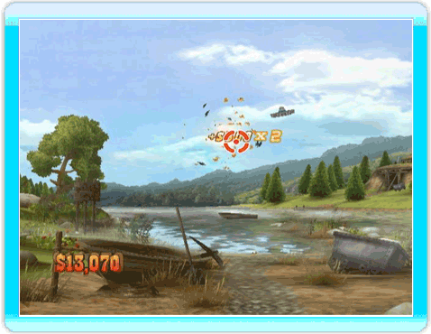
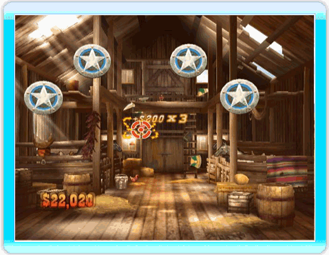
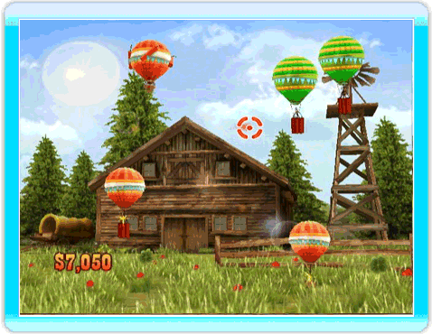
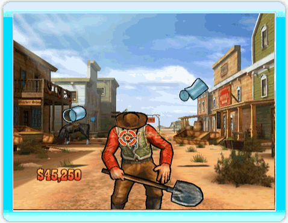
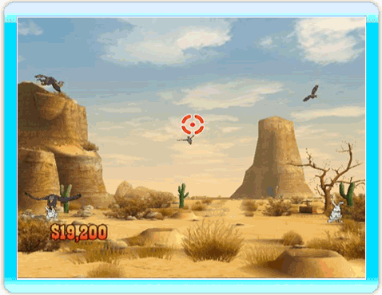
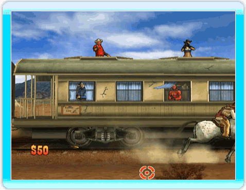

23 |
The Shooting Games |
 |
Sombreros are often seen flying in the sky. To test your reflexes and earn some money, shoot them as they fly past you. Sometimes you even have to shoot them all. TIP ⇨ The faster you shoot them, the more money you get!  Shoot the targets as they appear. The golden targets are worth more money, but be careful of the red ones: they’ll make you lose money! TIP ⇨ The red targets are not good. Be careful, some targets may move away quickly or flip to reveal a red target instead.  Want to have some harmless fun? Those balloons seem to be the perfect targets. But watch out, some of them are rigged with dynamite! You can use the blast from the explosion to your advantage. TIP ⇨ Shoot balloons of the same color in a row to get more money.  What was the most popular sport in the Wild West? Tin can shooting, of course! If that wasn’t enough, as the difficulty increases, you will have to keep cans in the air for specific periods of time without dropping them! TIP ⇨ Keep the tin cans in the air for as long as you can to get more money, but make sure to watch out for those mad scientists! The smoke will obscure your vision and make the cans harder to hit. 
TIP ⇨ The rabbits may be attacked from below. Keep an eye on the ground.  Bandits in the saloon? As a Marshal, you must keep the peace in town. Dispose of the bandits quickly to prevent them from shooting you. TIP ⇨ Watch out for the huge Indian. If he gets hold of you, he'll rough you up a bit.
Clear the train of bandits! Shoot them as they come out of hiding. Dispose of the bandits quickly to prevent them from shooting you. TIP ⇨ Watch out where you aim. Avoid shooting the cancan dancer dressed in red or you'll lose money.  |

 |
 |
 |